In China Employee Termination in 2026: FAQ Explainer for Foreign Employers (Legal Context First)
Key takeaways
- Foreign employers should start with legal framework clarity before designing termination payroll workflows.
- The main compliance risk is usually not lack of policy awareness, but inconsistent execution and documentation quality.
- Termination and payroll are linked: payout scope, communication, and records can directly affect dispute exposure.
- Social insurance and offboarding closure are part of termination risk management, not separate admin tasks.
- When uncertainty exists, separate uncontested and contested elements and seek local confirmation.
Why this article uses an FAQ format
Most overseas operators do not begin with internal process maps—they begin with core questions: What does the law require? Where are we most exposed? What should we do first if facts are unclear? An FAQ format is useful because it answers these questions directly in plain language while preserving legal and operational accuracy.
This explainer prioritizes legal-regulatory understanding for non-local readers. Detailed operational controls are included, but in a secondary section so legal context stays primary.
FAQ: legal and practical questions foreign employers ask most
1) What legal framework governs employee termination in China?
At a high level, the Labor Contract Law is the principal framework relevant to termination legality and potential compensation exposure. For foreign employers, the key implication is that termination should be treated as a regulated legal event, not simply a business staffing action. In practice, this means decisions should be supported by clear records, consistent internal coding, and coherent employee communication.
The legal framework sets boundaries, but it does not remove the need for disciplined execution. Teams that rely only on broad legal summaries often discover risk late—during payroll finalization or employee challenge handling.
2) Is severance always required in every termination case?
Not every case is identical, and outcomes depend on case facts and legal basis. For non-local teams, the safer approach is to avoid blanket assumptions and instead classify each case with supporting records. Where facts are disputed or unclear, payout scope should be narrowed to clearly supported items while unresolved points go through controlled review.
The most common foreign-employer mistake is to treat severance questions as “formula first.” Formula matters, but legal basis and evidence quality come first.
3) What is the biggest risk area for foreign employers?
In many real-world cases, the highest risk is execution inconsistency across HR, payroll, managers, and finance—not headline legal ignorance. Examples include:
- manager rationale not matching HR case summary,
- payroll component labels not matching employee communication,
- approvals captured informally instead of in official workflow,
- unresolved uncertainty processed as if fully confirmed.
These issues can turn manageable cases into avoidable disputes.
4) How does payroll connect to legal risk in termination cases?
Payroll is not just a payment engine in termination cases; it is part of the legal risk surface. If payout scope, treatment notes, and communication are inconsistent, the organization may struggle to defend decisions even when amounts appear reasonable.
For foreign employers, this means payroll release criteria should include legal-context checks: evidence completeness, approval integrity, and communication coherence—not only numerical validation.
5) What should we do if case facts are unclear before payroll close?
Use a split-scope approach:
- Identify clearly supported uncontested components.
- Hold contested or uncertain components.
- Assign owner and timeline for clarification.
- Seek local confirmation on uncertain treatment points.
- Communicate status to employee factually and consistently.
This approach is often less risky than forcing full in-cycle payout under uncertainty.
6) Why does social insurance closure matter in termination compliance?
Foreign employers often focus on severance and final salary, but termination-month closure can also involve social-insurance and related administrative steps. The Social Insurance Law context reminds teams that closure consistency matters. A case may look complete from a payroll perspective but remain weak from an end-to-end compliance perspective if closure tasks are incomplete or poorly documented.
7) How should EOR users divide responsibilities?
EOR structures can reduce administrative burden, but responsibility still needs clear mapping. A practical split is:
- client side: business rationale, decision authority, communication intent,
- EOR/provider side: local process execution, payroll implementation, filing/closure support,
- shared control: evidence standards, approval records, unresolved-risk escalation.
Without explicit role boundaries, accountability gaps appear at exactly the wrong time.
8) Can foreign teams run one global policy for all China locations?
A global policy baseline is helpful, but local implementation can vary in practice—especially around evidence expectations and how close cases are handled. Non-local teams should keep a standard framework while allowing controlled local add-ons where needed.
9) What does “good documentation” mean in termination practice?
Good documentation is not volume; it is clarity and retrievability. At minimum, teams should be able to show:
- case basis summary,
- supporting records,
- versioned payout logic,
- required approvals,
- aligned communication,
- closure evidence.
If these are fragmented, recoverability risk increases.
10) What single discipline most improves outcomes?
For most foreign employers, it is this: distinguish certainty from uncertainty before release. Pay what is clearly supportable; escalate what is not. This one discipline prevents many avoidable disputes and corrections.
Secondary practical section: minimum control model
To keep operations guidance concise and secondary:
- Establish a mandatory pre-release checklist (basis, approvals, component mapping, communication alignment).
- Require explicit hold/escalate decisions for uncertain items.
- Keep a single source-of-truth case summary shared by HR and payroll.
- Use documented authority matrix for payout changes.
- Track post-case lessons and recurring failure signals.
These controls support legal clarity without overwhelming non-local readers with process detail.
What to watch next
Foreign employers should monitor local practice developments in evidence sufficiency and dispute handling, then update internal standards accordingly. The strongest long-term improvement usually comes from better decision discipline and documentation quality rather than more policy text.
Disclaimer
This content is for informational purposes only and does not constitute legal, tax, or accounting advice. China employment and payroll implementation can vary by city and case facts. Employers should seek qualified local professional advice for case-specific decisions.
Sources
- National People's Congress. Labor Contract Law of the People's Republic of China. Official English text: http://www.npc.gov.cn/zgrdw/englishnpc/Law/2007-12/13/content_1384064.htm (accessed 2026-02-27).
- National People's Congress. Social Insurance Law of the People's Republic of China. Official English text: http://www.npc.gov.cn/zgrdw/englishnpc/Law/2009-02/20/content_1471106.htm (accessed 2026-02-27).
- PwC Worldwide Tax Summaries. People's Republic of China – Individual taxes on personal income. https://taxsummaries.pwc.com/peoples-republic-of-china/individual/taxes-on-personal-income (accessed 2026-02-27).
- Littler. Key Recent Developments in China's Employment Law: A China-U.S. Comparative Perspective for Multinational Employers. 2025-09-16. https://www.littler.com/news-analysis/asap/key-recent-developments-chinas-employment-law-china-us-comparative-perspective.
China-Payroll.com supports foreign employers with compliance-first EOR and payroll operations, including local-context termination governance.
Need local employment support in China?
If you need a compliance-first partner for hiring, payroll, and risk controls in China, China-Payroll.com can help evaluate the right setup.
Image Prompt Pack
Create a 16:9 hero image for article title: 'In China Employee Termination in 2026: FAQ Explainer for Foreign Employers (Legal Context First)'. Scene: global operations team evaluating workforce model options for China market entry. Include motifs: decision ma…